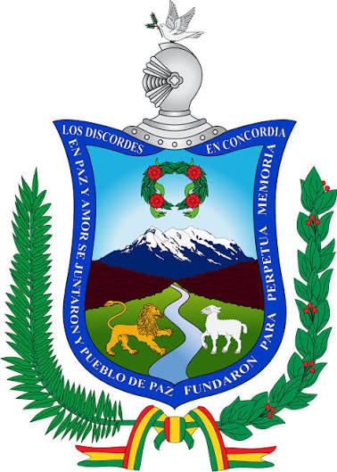

HISTORIA
La ciudad de Nuestra Señora de La Paz fue fundada el 20 de octubre de 1548 por el capitán español Alonso de Mendoza. El acto ocurrió originalmente en el pueblo de Laja por orden de Pedro de la Gasca, con el fin de asegurar el comercio entre Potosí, Cusco y Lima y celebrar la paz tras las guerras civiles
 | |